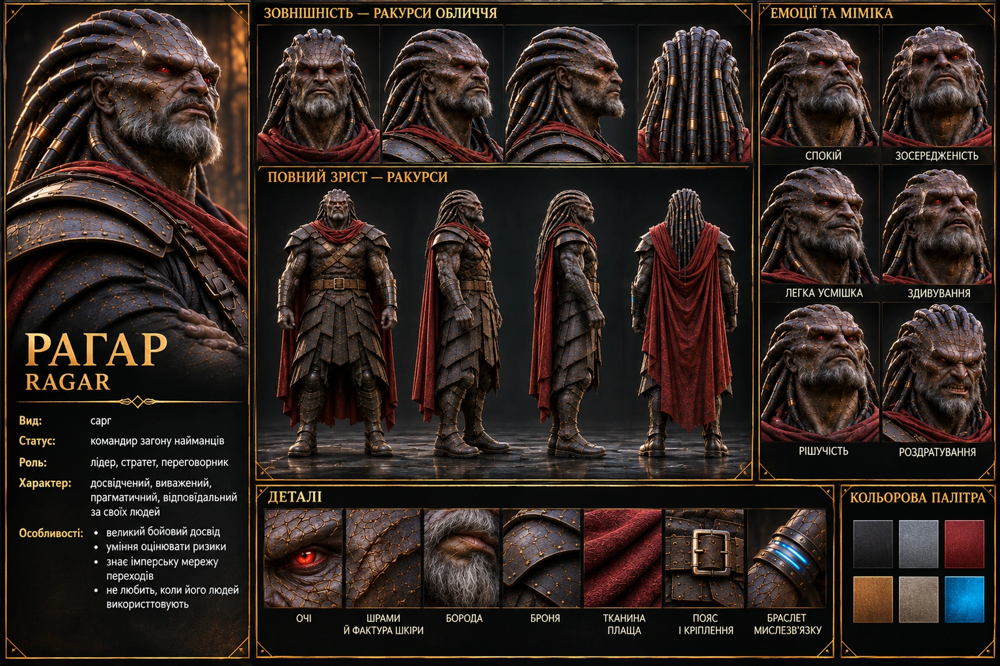

ОСНОВНА ІНФОРМАЦІЯ
Командир загону найманців
Рагар — сарг, який командує власним загоном найманців. Його підрозділ має транспорт і спорядження, виконує замовлення різних володарів та не прив’язується до одного покровителя.
Вид: сарг
Статус: командир загону найманців
Роль: лідер, стратег, переговорник
Зв’язки: знайомий із Кеором
ХАРАКТЕР І ПРИНЦИПИ
Досвідчений командир
Рагар досвідчений, виважений і прагматичний. Він відповідає за своїх людей, оцінює ризики та намагається домовлятися про умови до початку роботи. Якщо замовник змінює домовленості вже під час виконання завдання, Рагар готовий переглядати оплату.
Він не приховує, що не кожне замовлення можна просто відхилити. Його ставлення до таких ситуацій відрізняється від позиції Кеора, який нагадує про можливість відмовитися від роботи.
ЗУСТРІЧ ІЗ ДМИТРОМ
Пропозиція приєднатися до загону
Рагар зустрічає Кеора в міському барі й дізнається, що той подорожує з Дмитром — людиною, яка допомогла йому після поранення. Зацікавившись незвичним супутником, Рагар розпитує його про бойові навички та здатність відкривати переходи.
Побачивши в Дмитрові потенційно цінного бійця, Рагар пропонує йому місце у своєму загоні. Він запрошує Дмитра наступного дня познайомитися з людьми й оцінити умови. Дмитро не дає відповіді одразу.
ЗОВНІШНІСТЬ
На наданому візуальному паспорті Рагар зображений як масивний сарг із сірою лускатою шкірою, червоними очима, густою сивою бородою та довгими сегментованими відростками, зібраними назад. Носить темну багатошарову броню й глибоко-червоний плащ. На зап’ясті — браслет мислезв’язку.